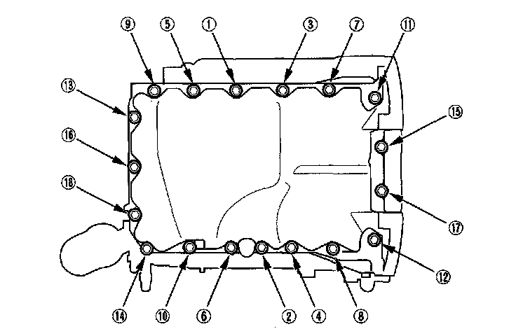

Oil Pan Installation
Oil Pan Installation1. Remove all of the old liquid gasket from the oil pan mating surfaces, bolts, and bolt holes.
2. Clean and dry the oil pan mating surfaces.
3. Apply liquid gasket, P/N 08717-0004,08718-0001, 08718-0003, or 08718-0009, evenly to the oil pan mating surface of the engine block. Install the component within 5 minutes of applying the liquid gasket.
NOTE:
^ If you apply liquid gasket P/N 08718-0012, the component must be installed within 4 minutes.
^ If too much time has passed after applying the liquid gasket, remove the old liquid gasket and residue, then reapply new liquid gasket.
4. Install the oil pan on the engine block.
5. Tighten the bolts in two or three steps. In the final step, tighten all bolts, in sequence, to 12 N-m (1.2 kgf-m, 8.7 lbf-ft).
NOTE: After assembly, wait at least 30 minutes before filling the engine with oil.

6. Tighten the four bolts (A) securing the transmission, then install the torque converter cover (B).
7. Install the rear warm up three-way catalytic converter (rear WU-TWC bracket.
8. If the engine is still in the vehicle, do the following steps.
9. Install exhaust pipe A using new gaskets and new self-locking nuts.
10. Install the splash shield.
11. Refill the engine with engine oil.
12. Lower the vehicle on the lift.